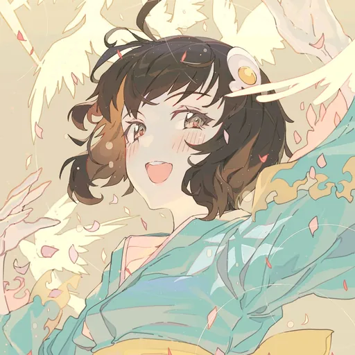

Ctrl K

WELCOME TO MY LITTLE WORLD
CidneyAurum
直面过去，创造未来
一只喜欢写代码，也喜欢看番的普通人类（大概）。
白天写代码，晚上补番，周末折腾点小东西。
这里收藏学习的足迹，也安放生活里的小小欢喜。
LIMBUS · LYRIC PERFORMANCE
边狱风格歌词演出
随歌声入场，跟随每一刻。
点一首歌，让歌词入场。
MIKU ON DUTY 初音的值班室
今天想去哪里？让我带你逛逛吧。
日语短语音 · 一点好奇心 · 陪你慢慢逛LOCAL TIME